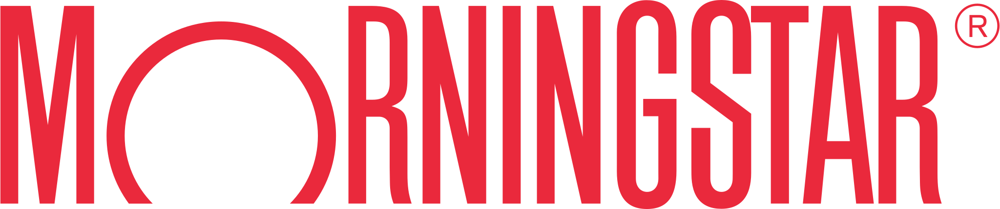
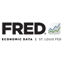

Acercar los mercados a los alumnos mediante eventos, profesionales de la industria y contenido práctico.

Aprende a interpretar la actualidad financiera y profundiza con guías, datos y recursos técnicos.
Conecta con profesionales y alumni, desde interns y analysts hasta associates, VPs, directors, MDs y equipos de selección.
Participa en charlas y talleres sobre Bloomberg, valoración, análisis de empresas y decisiones de inversión.
Equities · Fixed Income & Credit · FX · Commodities · Rates & Macro · Derivatives & Quant · ETFs & Funds
Nuestra red de ponentes y expertos vienen de las mejores empresas.
👉 Haz clic en cualquier logo para ver sus posiciones abiertas y programas de talento.
Fuentes para seguir la actualidad, consultar datos y analizar empresas.

Fichas y análisis de fondos y ETF.
Series de inflación, tipos de interés y empleo.Los índices y activos más seguidos. Datos orientativos actualizados a través de fuentes abiertas.
Webs seleccionadas para aprender financial modeling, valuation y los procesos del sector financiero.
Como estudiante de CUNEF tienes acceso gratuito a las herramientas que usan los profesionales en banca de inversión y research.
Titulares y movimientos relevantes para seguir el pulso del mercado antes de clase, eventos o sesiones del club.

Finance Superday · Rothschild & Co · Campus Almansa, abril 2026
Estamos preparando la próxima agenda. Las fechas y los detalles de los eventos están por confirmar.
Alexandra Azorí, de BBVA, sobre Brexit, Telefónica y decisiones bajo incertidumbre. Lee la crónica y descubre las claves del encuentro.
Primer contacto práctico con Bloomberg: creación de cuentas, análisis de mercados y visita institucional en CUNEF Universidad.
Encuentro del club dedicado a los fondos de value investing con Magallanes.
Paneles de investment banking, asset management y alternativos con firmas globales, más networking con profesionales.
Somos la comunidad de estudiantes de CUNEF que quiere aprender mercados financieros, conectar con profesionales y preparar procesos de selección en finanzas.
Entrar al grupo de WhatsAppProceso de entrada: entra al grupo, preséntate y recibirás las próximas convocatorias del board.